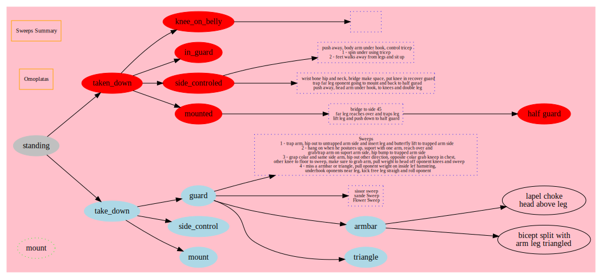

Jujitsu moves documented in Graphiz.
The manual is
here
and website is
here.
Developed the diagram below using VSCode to preview and export the image via an
extension.
Installed on Mac via brew installl graphviz.
Generate outputs are generated via:
npm run dev, oryarn devNote to manually convert the dot file use
dot -Tsvg ./src/jujitsu-moves.dot > ./docs/jujitsu-moves.svg
